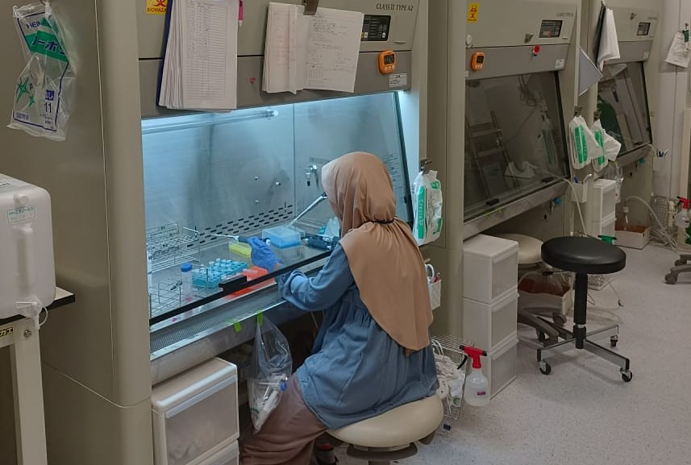

Kembangkan Riset Bahan Alam, Dosen Farmasi Itera Jadi Visiting Scientist di Osaka University Jepang
ITERA NEWS – Dua dosen Program Studi Farmasi, Fakultas Sains, Institut Teknologi Sumatera (Itera), yakni Dr. apt. Sarmoko, S.Farm., M.Sc. dan apt. Tantri Liris Nareswari, S.Farm., M.S.Farm.,mendapat kesempatan berharga mengikuti program visiting scientist di Advanced Cosmetic Science Laboratory, Graduate School of Pharmacy, Osaka University, Jepang. Kegiatan ini dilaksanakan pada 16–30 Agustus 2025.
Program tersebut menjadi bagian dari realisasi kerja sama riset internasional antara Itera dan Osaka University, dengan fokus penelitian pemanfaatan bahan alam untuk pengembangan sediaan topikal dalam terapi penyakit kulit. Selama menjalani program, kedua dosen Itera berpartisipasi dalam berbagai aktivitas ilmiah, mulai dari forum diskusi akademik, pertukaran pengalaman riset, hingga penjajakan peluang kolaborasi lanjutan di bidang farmakologi dan teknologi farmasi.
Program tersebut menjadi bagian dari realisasi kerja sama riset internasional antara Itera dan Osaka University, dengan fokus penelitian pemanfaatan bahan alam untuk pengembangan sediaan topikal dalam terapi penyakit kulit.
Dr. apt. Sarmoko menuturkan bahwa pengalaman ini menjadi momentum penting bagi Itera dalam memperluas jejaring riset global. “Melalui kolaborasi ini, kami berharap dapat melahirkan inovasi berbasis bahan alam yang dapat memberikan manfaat luas di bidang farmasi, khususnya untuk pengembangan terapi penyakit kulit,” ujar Dr. Sarmoko.
Keterlibatan dosen Itera dalam program visiting scientist diharapkan tidak hanya memperkuat jaringan penelitian internasional, tetapi juga mendukung upaya Itera dalam meningkatkan kontribusi keilmuan dan mempertegas peran sebagai institusi pendidikan tinggi yang kompetitif di tingkat global, khususnya dalam riset kefarmasian dan pemanfaatan potensi alam Indonesia. (Rilis/Humas)
